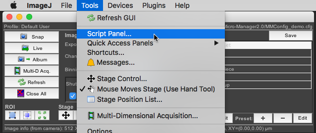

Scripting Micro-Manager
Nico Stuurman and Henry Pinkard, late 20202...
Program:
- Introductions (30 s each;)
- Intro to Core and Studio APIs(Nico)
- Breakout session on Core
- 10 min. Break
- Intro to pycro-manager APIs(Henry)
- Breakout on higher level APIs
- Plugins: Micro-Magellan (plugins)
- (optional) Breakout on plugins, freeform, etc..
- Evaluation/Summary
Micro-Manager, Key Points:
Open Source

> 150 code contributors
Community driven

Cross-platform

Mac, Windows
Extensible:
Script, Plugins, APIs
Python, Matlab, Labview, C/C++, etc..
FREELY AVAILABLE!
Software architecture overview, 2005

Nenad Amodaj


Supported by the Sandler Foundation
Bottom (device adapter) API

All Devices

Cameras

Compiled Binaries
Software architecture overview, 2005
Nenad Amodaj

Software architecture overview, 2005
Nenad Amodaj
Swig
MMCoreJ_wrap.jnilib
MMCoreJ.jar
MMCorePy.Pi
Many Ways to interacted with APIs


Micro-Manager Beanshell scripting


Startup Script